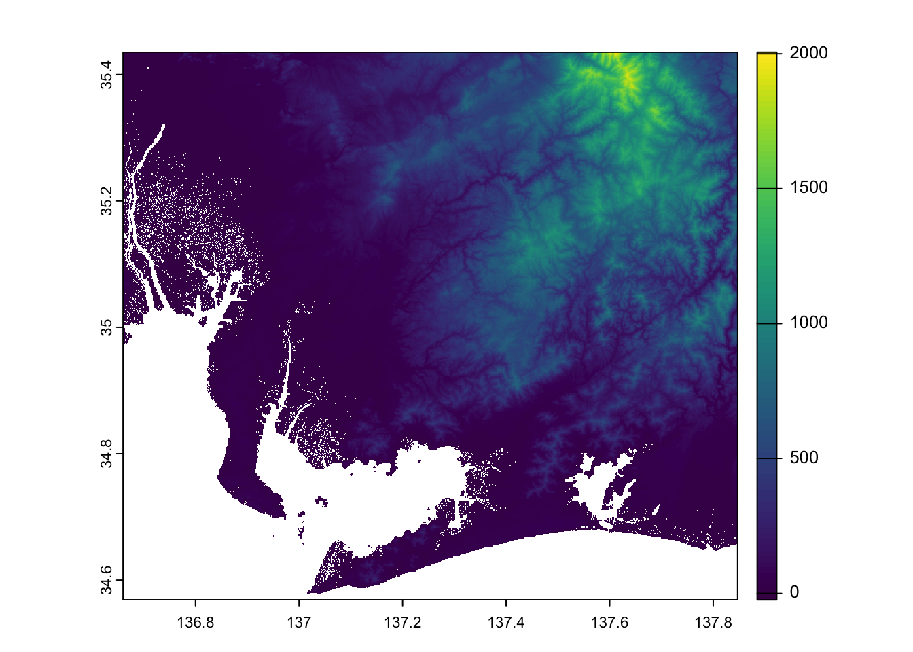
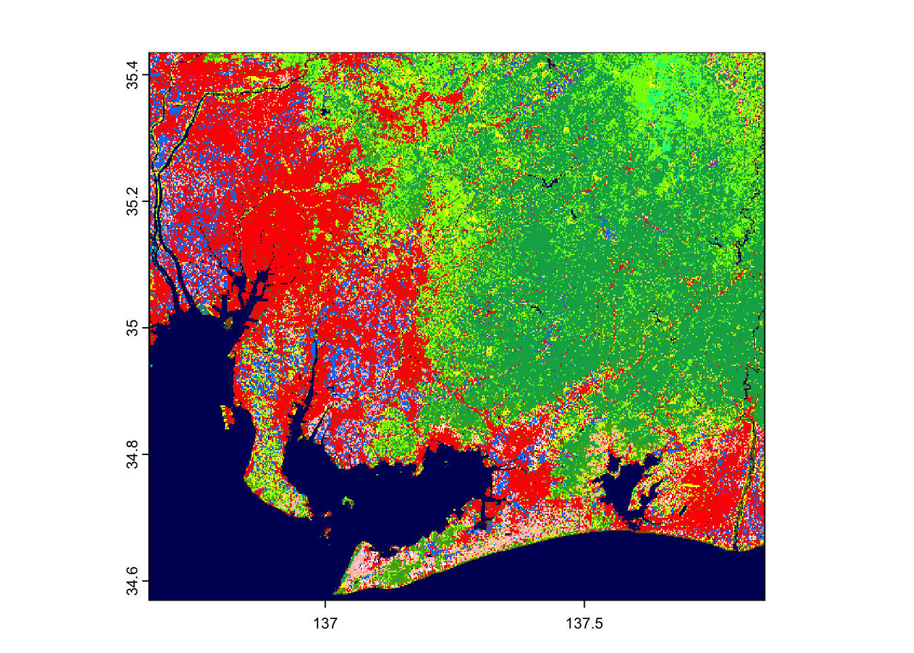
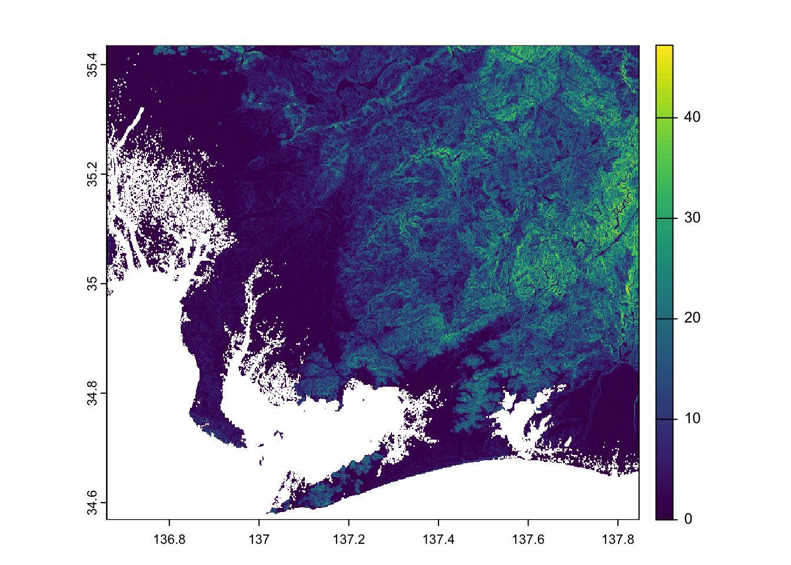
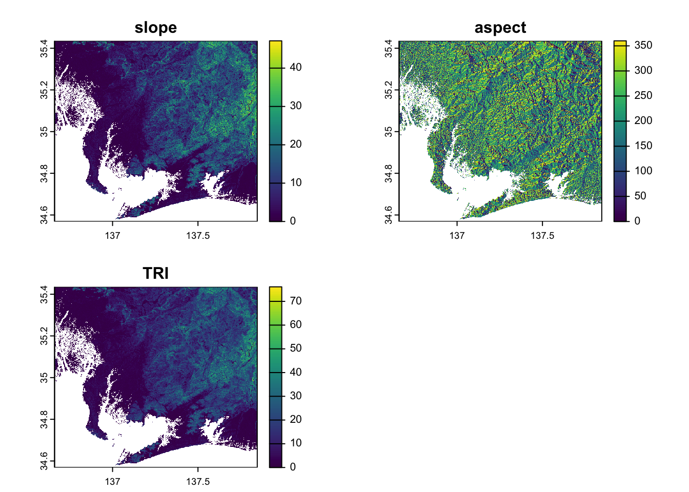
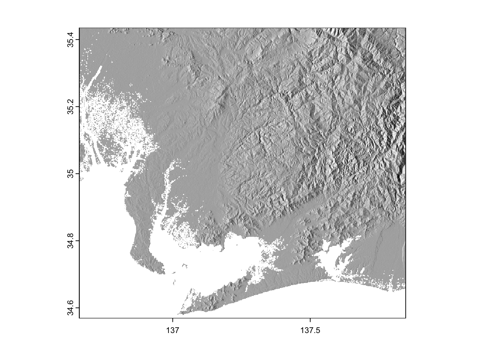

#This is an introduction to working with spatial data in R
library(pacman) #if you have never used this package, you need to install it: install.packages("pacman)
pacman::p_load(tidyverse,terra)
setwd("your_path/workshop_03")
######################Workshop 03: Processing and Analyzing Raster Data
The objective of this workshop is to demonstrate how to process multiple raster layers. We will work with digital elevation model (DEM) data and continue using land cover data in Japan. Then we will use very efficient raster operations to process and summarize the data.
Prerequisites
Reading
R as GIS for Economists remains a useful reference.
Digital Elevation Model (DEM)
We will use a digital elevation model (DEM) based on imagery taken by the Shuttle Radar Topography Mission (SRTM GL3) Global 90m and accessed via the R package elevatr and OpenTopography API. Note that the data is also available in 30 meter resolution. DEMs are useful in environmental research and are the basis for other topographic calculations. OpenTopography API requires researchers to register for an API key. You may register and run the code here. Please download the data I have posted here:
Japan DEM (by prefecture) (only need Aichi for the workshop)
Japan DEM (merged) (Optional)
RStudio
We will be working with packages designed to process and visualize geospatial data. You can install a package by typing the following into the console: install.packages("package_name"). Note the quotations. Please install the following packages on the computer you will be using:
sf: simple features a package with many utilities for working with spatial vector dataterra: another package for working with raster data
Note that you do not need to install packages if they are already installed - you only need to install packages once.
Getting started
Before opening Rstudio and working with the data, you should organize your digital workspace.
Create a directory for this workshop titled:
workshop_03. If you already have a directory for this class/seminar, create the directory under the class directory.Create a directory titled
inputsunderworkshop_03. The path should beworkshop_03/inputs.Download and move the [DEM] files into
workshop_03/inputs.We will also continue using the land cover data from workshop 02. Copy the file JAXA_HRLULC_Japan_v23.12_250m.tif (2022) into
workshop_03/inputs.
Open up Rstudio and do the following:
Open a new script.
Write a comment with a brief description about what the script does. In most cases, you know the intention of the script.
Load the package
pacmanand usep_load()to install and load the packages we will be using in this workshop.Navigate to
workshop_03(the directory you just created for the project). You can use the dropdown menu Session > Set Working Directory > Choose Directory or type thesetwd("path_here")command at the top of your script. If you use the dropdown menu, R will generate thesetwd()command and display it in the console. Copy and paste it into your script.Save your script and title the file:
workshop_03.R
The first several lines of your script should look something like this:
Raster Aggregation and Zonal Statistics
We will start by reading in the DEM and land cover raster layers. Our objective is to summarize the DEM information based on the land cover classification. We will illustrate the methods using only the data from Aichi, but the steps apply to all layers.
Step 1: Loading and Preparing Raster Data
We begin by connecting to each raster dataset using terra::rast(). Note that we immediately crop our land cover layer to the extent of aichi_dem. Notice that the resolution is different.
# Connect to
aichi_dem <- rast("inputs/jp_dem/aichi_ken.tif")
print(aichi_dem)class : SpatRaster
dimensions : 1040, 1424, 1 (nrow, ncol, nlyr)
resolution : 0.0008333333, 0.0008333333 (x, y)
extent : 136.6604, 137.8471, 34.56875, 35.43542 (xmin, xmax, ymin, ymax)
coord. ref. : lon/lat WGS 84 (EPSG:4326)
source : aichi_ken.tif
name : aichi_ken
min value : -29
max value : 2015 # Read in land cover raster data
aichi_lc <- terra::rast("inputs/JAXA_HRLULC_Japan_v23.12_250m.tif") %>%
terra::crop(aichi_dem) #crop to dem extent
print(aichi_lc)class : SpatRaster
dimensions : 416, 570, 1 (nrow, ncol, nlyr)
resolution : 0.002083333, 0.002083333 (x, y)
extent : 136.6604, 137.8479, 34.56875, 35.43542 (xmin, xmax, ymin, ymax)
coord. ref. : lon/lat WGS 84 (EPSG:4326)
source(s) : memory
color table : 1
varname : JAXA_HRLULC_Japan_v23.12_250m
name : JAXA_HRLULC_Japan_v23.12_250m
min value : 1
max value : 14 We can also plot the data to see that it generally matches our expecations.
#Plot DEM
plot(aichi_dem)
#Plot land cover
plot(aichi_lc)
aichi_dem has missing data places covered by water and urban areas. We can confirm this by counting the number of cells with missing values sum(is.na(values(aichi_dem))) and calculating the fraction of the raster covered by NAs sum(is.na(values(aichi_dem)))/ncell(aichi_dem).
Step 2: Resampling
We want to summarize data in one layer based on the other. However, the DEM is 90-meter resolution and the land cover is 250-meter resolution. As researchers, we are generally limited by the lowest-resolution data. In this case, the land cover data is 250-meter (higher resolution data is available). The function terra::resample() efficiently resamples the higher-resolution data to match the lower-resolution data. Print the metadata describing the layer.
# Resample elevation data to 250m to match land cover resolution
aichi_dem_resampled <- resample(x = aichi_dem, #to be resampled
y = aichi_lc, #resampled to
method = "bilinear") # Bilinear for continuous data
#Print the metadata
print(aichi_dem_resampled)class : SpatRaster
dimensions : 416, 570, 1 (nrow, ncol, nlyr)
resolution : 0.002083333, 0.002083333 (x, y)
extent : 136.6604, 137.8479, 34.56875, 35.43542 (xmin, xmax, ymin, ymax)
coord. ref. : lon/lat WGS 84 (EPSG:4326)
source(s) : memory
varname : JAXA_HRLULC_Japan_v23.12_250m
name : aichi_ken
min value : -11.90679
max value : 1954.90356 #Formally compare the layers
compareGeom(aichi_dem_resampled, aichi_lc, stopOnError = FALSE)[1] TRUEStep 3: Zonal Statistics
Now that we know the layers are aligned, we can use the function terra::zonal() to calculate statistics of one layer based on the other. The function name refers to the notion that the values of one layer define the zone. In this case, the 14 land cover classifications define the zones.
# Calculate elevation statistics by land cover class
aichi_stats <- zonal(x = aichi_dem_resampled, #the layer to ve calculated
z = aichi_lc, #the layer defining the zones
fun = "mean", #calculate the mean
na.rm=TRUE, #ignore NAs
as.raster = FALSE) #output into a dataframe instead of raster - this is the default
# Rename the columns
aichi_stats <- aichi_stats %>%
rename(land_class = JAXA_HRLULC_Japan_v23.12_250m,
elevation = aichi_ken)
print(aichi_stats) land_class elevation
1 1 88.19353
2 2 43.91542
3 3 57.67082
4 4 58.20422
5 5 205.25673
6 6 534.82683
7 7 1210.13576
8 8 199.01964
9 9 533.93950
10 10 106.97734
11 11 169.36604
12 12 78.55032
13 13 179.06948
14 14 41.57757Step 4: Terrain
Digital Elevation Models are useful beyond extracting elevation. One can calculate topographic information from elevation, including slope, aspect, ruggedness, among others. terra::terrain() can calculate these measurements by cell using information around the cell. Note that there is an identically named function in the raster package
#Calculate terrain
aichi_dem_ter <- terra::terrain(x = aichi_dem,
v = c("slope"),
neighbors = 8)
print(aichi_dem_ter)class : SpatRaster
dimensions : 1040, 1424, 1 (nrow, ncol, nlyr)
resolution : 0.0008333333, 0.0008333333 (x, y)
extent : 136.6604, 137.8471, 34.56875, 35.43542 (xmin, xmax, ymin, ymax)
coord. ref. : lon/lat WGS 84 (EPSG:4326)
source(s) : memory
varname : aichi_ken
name : slope
min value : 0.00000
max value : 50.97108 #Plot the slope data
plot(aichi_dem_ter)
As you might expect, the mountainous areas have the steepest slopes. Let’s calculate slope, aspect, and ruggedness (see the terrain() documentation for calculation details).
#Calculate terrain
aichi_dem_ter <- terra::terrain(aichi_dem,v=c("slope","aspect","TRI"),neighbors=8)
print(aichi_dem_ter)class : SpatRaster
dimensions : 1040, 1424, 3 (nrow, ncol, nlyr)
resolution : 0.0008333333, 0.0008333333 (x, y)
extent : 136.6604, 137.8471, 34.56875, 35.43542 (xmin, xmax, ymin, ymax)
coord. ref. : lon/lat WGS 84 (EPSG:4326)
source(s) : memory
names : slope, aspect, TRI
min values : 0.00000, 0, 0.000
max values : 50.97108, 360, 76.125 #Plot the slope data
plot(aichi_dem_ter)
Now we can use zonal to calculate the mean of these metrics by land classification. Remember to resample up to 250-meter resolution first.
#reample to 250 meter
aichi_dem_ter_resampled <- resample(aichi_dem_ter, aichi_lc, method = "bilinear")
#Calculate slope on land classes
aichi_ter_stats <- zonal(aichi_dem_ter_resampled, aichi_lc, fun = "mean",na.rm=TRUE)
print(aichi_ter_stats) JAXA_HRLULC_Japan_v23.12_250m slope aspect TRI
1 1 5.944707 182.8890 8.241594
2 2 2.156068 188.1572 3.202888
3 3 2.164119 184.5863 3.321029
4 4 2.855291 185.4829 4.103046
5 5 5.538700 187.1487 7.676857
6 6 13.576250 188.2740 18.385386
7 7 15.757645 173.0469 20.809032
8 8 13.221970 182.3056 17.857486
9 9 15.062418 186.4063 20.251659
10 10 5.501523 187.1796 7.880273
11 11 8.202447 186.7086 11.269355
12 12 3.690616 183.2676 5.255811
13 13 5.474092 185.8851 7.824027
14 14 2.186525 186.0377 3.175129Hillshade
You may also want to use the DEM as a baselayer on another map. You can use terra::shade() to compute a layer to be plotted as a basemap.
#Recreate the slope and aspect components in radians
aichi_ter_rad <- terra::terrain(aichi_dem,v=c("slope","aspect"),unit="radians")
#Construct shade raster
hill <- shade(aichi_ter_rad$slope,
aichi_ter_rad$aspect,
40, 270)
#Plot it with a gray color scheme
plot(hill, col=grey(0:100/100), legend=FALSE)
Rest of Japan
We have illustrated how to resample and summarize data in one layer based on another in Aichi. Given the DEMs for the other prefectures, how could you compute these statistics for all of Japan?
Code
#Download the merged or stitched layer
jp_dem <- rast("inputs/jp_dem.tif")
# Read in land cover raster data
jp_lc <- terra::rast("inputs/JAXA_HRLULC_Japan_v23.12_250m.tif") %>%
crop(jp_dem)
# Resample elevation data to 250m to match land cover resolution
jp_dem_resampled <- resample(x = jp_dem, #to be resampled
y = jp_lc, #resampled to
method = "bilinear")
jp_stats <- zonal(x = jp_dem_resampled, #the layer to ve calculated
z = jp_lc, #the layer defining the zones
fun = "mean", #calculate the mean
na.rm=TRUE, #ignore NAs
as.raster = FALSE)Summary
These three workshops covered how to work with spatial data. Specifically, the workshop demonstrates how to process vector and raster data, and any combination of the two. The following briefly summarizes the material in each workshop.
Workshop 01
- Merging non-spatial data with spatial data to create thematic maps (choropleth)
- Coordinate Reference Systems and transformation
- Using
tmapto visualize data
Workshop 02
- Extracting raster values based on polygon boundaries
- Creating a buffer around a point of interest
- Reassigning color palette for better map making
- FE regression
- Visualizing data over time
Workshop 03
- Resampling raster data to match lower-resolution data
- Summarizing data in one layer based on categorical data in another layer
- Use terrain function to calculate slope and more from digital elevation model
Workshop website and code available here.